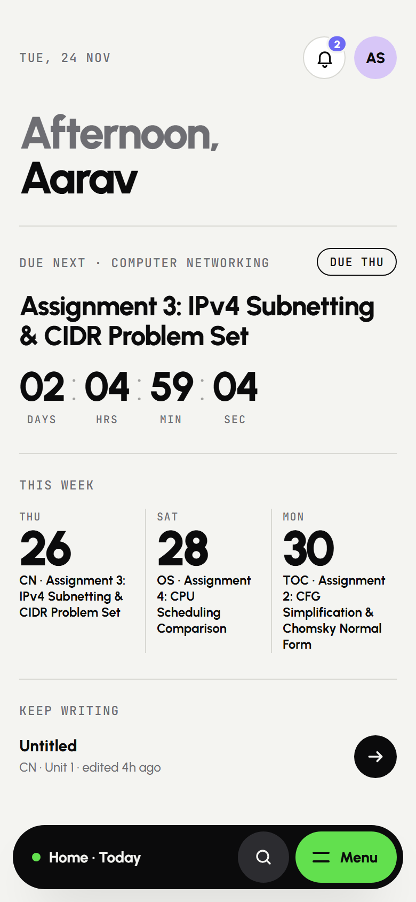
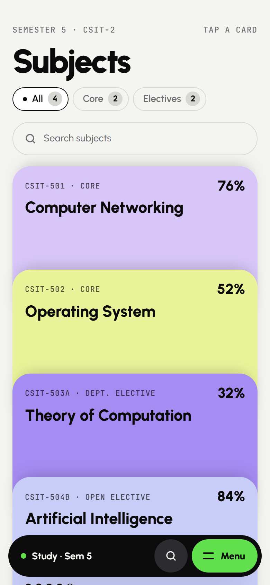
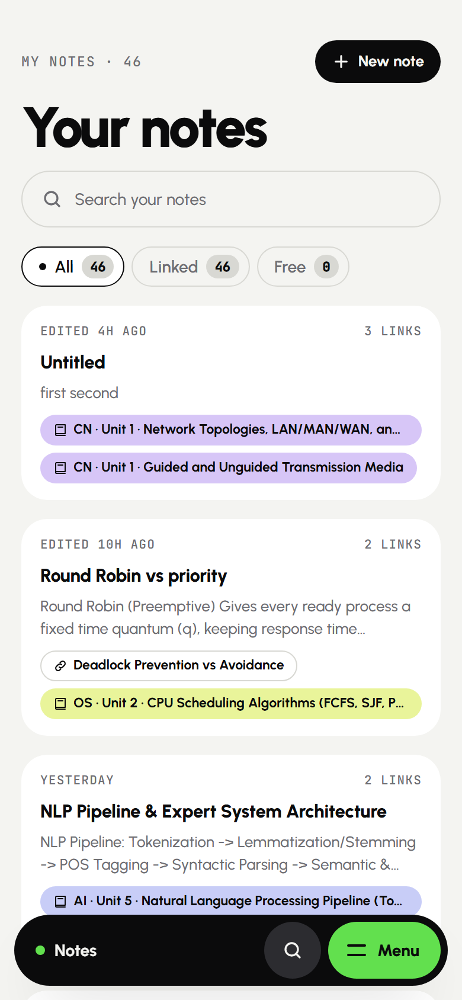
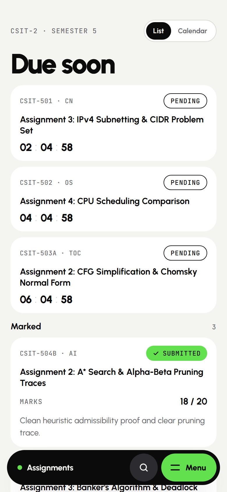
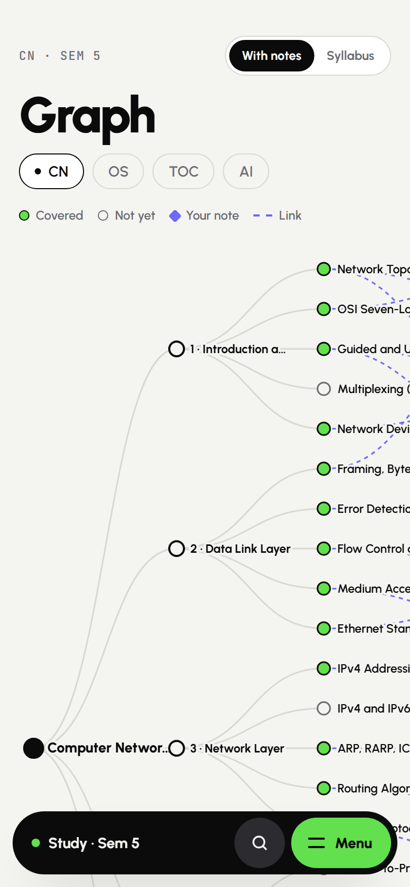

Your syllabus, notes and deadlines, woven into one app.
RGPV syllabus is a PDF; students can't see what they've covered.
Notebooks, WhatsApp, Drive; nothing tied to the syllabus.
Assignments posted in WhatsApp groups get buried; submissions are missed.
Students and teachers can't see how far a class really is.
Weave connects your syllabus, your notes and your deadlines — and shows what you know and what you're missing.





Weave is the only one built around your syllabus.